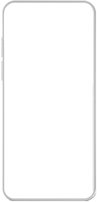

Mé zkušenosti
Tvorbě webu se věnuji od poloviny roku 2024, a své znalosti a zkušenosti jsem nabral především samoukou skrze více různých zdrojů. Mezi ně například patří w3schools, youtube kanály a to převážně kanál Davida Šetka. Pomohli mi také aplikace na telefon například Mimo, Sololearn a nebo enki, které sloužili jako opáčko nebo inspirace pro učení v následujícím dni. Jako další musím zmínit tvorbu, jelikož člověk se nejvíce učí tím, že něco tvoří a při své cestě tuto metodu aplikuji jak jen to jde. Dále jsem v únoru roku 2025 úspěšně dokončil kurz "Tvorba webových stránek" a od té doby pracuji na projektech které zde prezentuji.
Ovládám:
Částečně ovládám:
Jsem motivovaný a nadšený programátor webových aplikací.
Projekty
Pojišťovací agentka - Iveta Lekešová
Odkaz na stránkuIlustrativní stránka pro pojišťovací agentku, s horizontálním designem na větších zobrazovacích zařízeních.
Appka na počasí - Weatherse
Odkaz na stránkuStránka, pro zobrazování počasí a větru ve zvolených městech, výběr se pro uživatele ukládá a údaje ve vybraných městech se aktualizují.